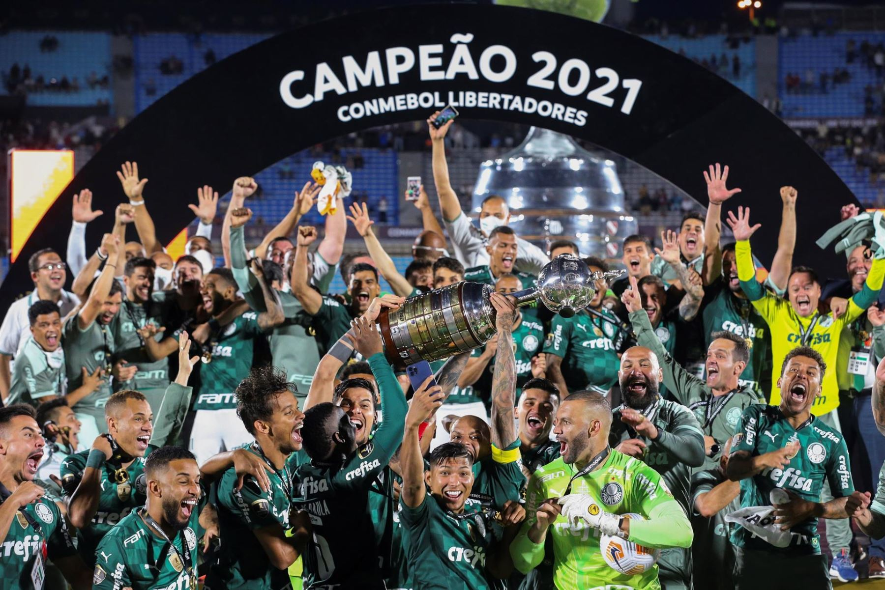
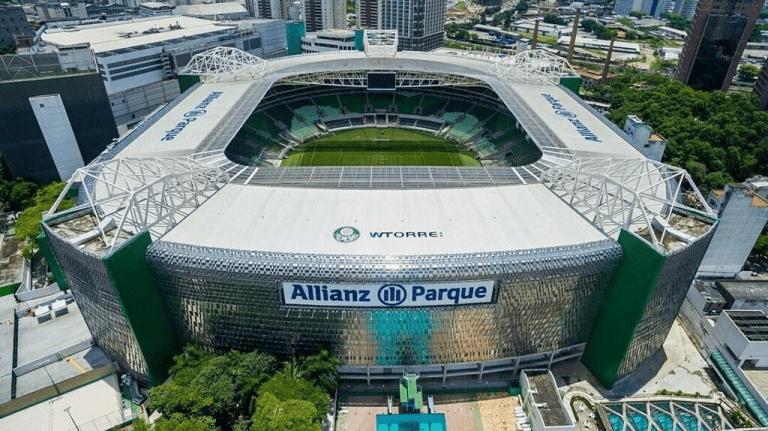

A Sociedade Esportiva Palmeiras é um clube poliesportivo brasileiro da cidade de São Paulo, capital do estado homônimo. Foi fundado em 26 de agosto de 1914 e suas cores, presentes no escudo e bandeira oficial, são o verde e branco. O vermelho, presente desde sua fundação em 1914, foi excluído durante a Segunda Guerra Mundial, por pressão do governo nacional, na mesma reunião que formalizou a mudança de nome de Palestra Itália para Palmeiras. A História da Sociedade Esportiva Palmeiras começa no dia 26 de agosto de 1914, quando o clube foi fundado por imigrantes italianos na cidade de São Paulo com o nome de Palestra Italia. A primeira partida da equipe foi disputada em 24 de janeiro de 1915 contra o Savóia, do atual município de Votorantim, à época distrito de Sorocaba, no interior paulista, e contou com a vitória palestrina por 2 a 0, com gols de Bianco e Alegretti.
saiba maisCom a conquista da Supercopa de 2024, o São Paulo chegou ao seu 39º título entre as principais competições e completou a galeria de troféus com mais um título inédito. O Tricolor é um dos grandes campeões nacionais e o time de maior sucesso internacional do país; veja os títulos. :
11 Campeonatos Brasileiros: 1960, 1967, 1967 (Taça Brasil), 1969, 1972, 1973, 1993, 1994, 2016, 2018 e 2022
4 Copas do Brasil: 1998, 2012, 2015 e 2020
25 Campeonatos Paulistas: 1920, 1926, 1927, 1932, 1933, 1934, 1936, 1940, 1942, 1944, 1947, 1950, 1959, 1963, 1966, 1972, 1974, 1976, 1993, 1994, 1996, 2008, 2020, 2022 e 2023
5 Torneios Rio-São Paulo: 1933, 1951, 1965, 1993 e 2000
1 Recopa Sul-Americana: 2022
1 Supercopa do Brasil: 2023
Escalação:Weverton; Mayke, Gustavo Gómez, Luan e Piquerez; Danilo, Zé Rafael, Gustavo Scarpa e Raphael Veiga; Dudu e Rony. TÉCNICO: Abel Ferreira.
O Palestra Itália é um estádio paulistano, do bairro Água Branca, que pertence ao Palmeiras. O time do Palestra Itália começou a alugar o campo disponível para jogos em meados dos anos 1910. Dividindo a locação com o extinto América FC, anos depois os dirigentes do clube resolveram adquirir a área do campo e, então, surgiu o primeiro estádio do Palestra: o Parque Antárctica, a primeira casa do alviverde mais famoso da cidade de São Paulo.
 Voltar ao início